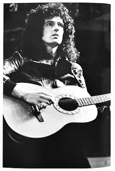
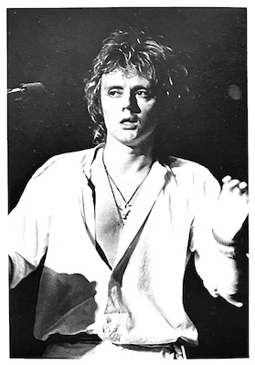
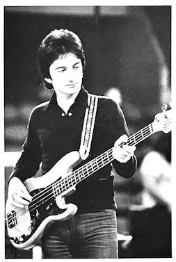

1977 US Tour Report

On the opening night in Portland, the band played to a packed house. Every venue was sold out throughout the tour. New England was already a well-established market for Queen, and Boston radio stations played them a lot, causing their latest single to skyrocket to #1 that week.
Regarding the shows themselves, the band made some minor adjustments this time around. Since they can now perform a 2 hour and 15 minute concert, they didn't use opening acts. The stage was the most impressive it's ever been! The giant crown suspended above the stage began to glow gradually as the show started. All the while, a massive cloud of smoke billowed onto the stage. The opening number was always We Will Rock You, a fairly heavy and fast track. AFter this grand spectacle, they performed songs from their new album, including We Are The Champions, My Melancholy Blues. Sheer Heart Attack, Spread Your Wings, Get Down Make Love, Somebody to Love, and It's Late. Of course, they played lots of familiar hits too, like Killer Queen, Keep Yourself Alive, White Man, Stone Cold Crazy, and Death On Two Legs. Some of the numbers were acoustic, such as Love of My Life and My Melancholy Blues. For the encore, they repeated Rock You and Champions. And so it went! For the second encore, Freddie would come out wearing a lurex suit to performe Sheer Heart Attack and Jailhouse Rock.
The five dates following Portland were all clustered together geographically, and Queen moved from city to city. When they were in Toronto, they climbed the CN Tower, one of the world's tallest and most imposing buildings. From Toronto, they flew to Philadelphia. Previously they had refused to use a private jet, believing that commercial planes were safer, but after a long tour, they decided to charter a special plane. This plane was specially modified for a rock band and had 17 reclining seats as well as a bedroom and kitchen. Queen was able to sit in the cockpit during the flight and watch the takeoffs and landings.
After two shows in Philadelphia, they went to Norfolk, Virginia, a place they'll never forget, because that's where they met Frank Kelly Freas, the artist behind the cover for News of the World. They met him and his family at an exhibition at the Chrysler Museum of Art, where the original work that inspired the album cover was on display. This meeting was covered by the press. Afterwards, Frank presented each bandmember with a rare science fiction book from his collection.
The next performance was on November 27th in Cleveland, Ohio. There, Queen was invived to the control tower of the Cleveland Air Service. John was particularly interested because of his knowledge of electronics. Backstage at Cleveland, the band was visited in their dressingroom by Ben Pevern, drummer for Electric Light Orchestra, which was also on tour in America at the time.
Before their New York performance, Queen played a show in Washington D.C., where they stayed at the notorious Watergate Hotel. The New York shows were on December 1st and 2nd. During the first encore, Freddie came out wearing a New York Yankees jacket and cap. The Yankees had just won the World Series and were using We Are The Champions as their theme song. When Freddie appeared onstage, the audience spontaneously began singing the song. After the show, Elektra threw Queen a big party.

On December 8th in Atlanta, Bob Harris, the host of a major British rock show, arrived with a film crew to shoot a documentary about Queen. They filmed in Fort Worth and Houston, after which the film crew left but Bob Harris stayed and went on to Las Vegas with the band. While in Houston, Roger took a sidetrip to LA to see a Rod Stewart show. The other three remained in Las Vegas and met with Bob Hart, a music critic for "The Sun". While in Vegas, the entire group also went to see the MGM Hotel's musical spectacular, "Hallelujah Hollywood".

In Long Beach, Queen appeared on an NBC News segment. This segment included an interview, the assembly of their tour equipment, and a glimpse of their stage performance. On the night of the Long Beach show, Elektra threw another party for the band. The entertainment included various exotic dancers, magicians, and musicians.
December 22nd was a the Los Angeles Forum. This was a special show, being the night before Christmas Eve, and the final performance of the tour. Giant spotlights shone brightly, and the venue was already filled with a jolly Christmas atmosphere! Thanks to this, this special show became an unforgettable night. Before the final encore, a giant Santa Claus (Queen's 6'6" bodyguard) walked around the stage with a huge sack, but instead of toys, it had Freddie inside! The band really enjoyed themselves onstage that night, mingling with people in various costumes, some of which were rather gaudy. The director of EMI and even John Reid was there, dressed as an elf. During the show, a Christmas tree twinkled, and even reindeer and clowns popped out! During the encore, 5,000 balloons were released from the ceiling, and fake snow and lights rained down on the arena seats. Towards the end of the show, everything became even more Christmassy as Freddie and Brian performed their own acoustic arrangement of White Christmas. After the show, photographyer Barry Lepin threw yet another private party for the band, with KiKi Dee and The Runaways amongst the guests.
Unfortunately, long-time roadie John Harries fell seriously ill and was rushed to the hospital after the performance. He's a familiar face, with blond hair, always standing behind the mixer and taking care of the soundboard. He's currently in the hospital in LA and is slowly recovering. We wish him a speedy recovery and hope he can return to England soon so we can see his familiar face on tour again!